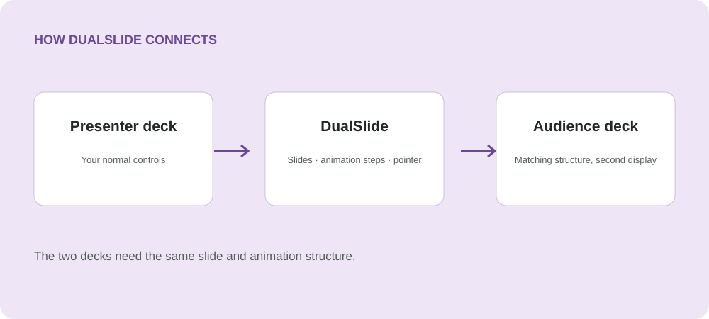

Present in parallel
Keep two matching decks together while showing different content to each screen. PowerPoint renders both native slideshows.
Windows 11 · Microsoft PowerPoint
Present two matching PowerPoint decks on separate displays. Navigate the presenter deck normally while the audience deck follows your slides, animation steps, and pointer.
Ideal for translated slides or parallel decks with the same structure.

Keep two matching decks together while showing different content to each screen. PowerPoint renders both native slideshows.
Ordinary clicks, keyboard and wheel navigation, animation steps, and native cursor or laser movements follow along.
Identify your displays, recall paired decks, and start. Pause, reset the current slide, or press Escape to end both shows.
Get started
Windows 11 x64, desktop Microsoft PowerPoint installed and configured, and two displays in Extend mode. The decks need matching slide counts, aspect ratios, and ordinary animation sequences. PowerPoint for the web is not supported.
Synchronization follows PowerPoint slide/build state and is not frame-locked. Shape-specific animation triggers, ink mirroring, and synchronized audio/video clocks are outside scope. Close editable sessions using these files before starting.
How it works
Made by Silviu Vlasceanu
Help keep DualSlide moving forward with a tip, a bug report, or a contribution.